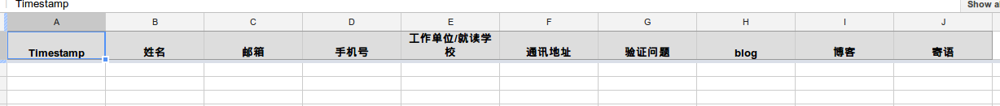

使用google doc建立在线调查表!~
在线办公我以前试过zoho, 但是一个xls文件有多个人同时编辑时会有问题...
昨天收到学长关于春游的调查表, 居然是用google doc做的, 很给力. 我早就想做一个分布式通讯录, 所以研究了一下. 越来越感觉google提供的服务(google doc, google site, google project)太方便了!!!
建立
大概的流程是这样的: 用google帐号进入google doc, 然后点击creat->form, 会看到这样的页面:

嗯, 功能是比较简单但是够用! 点击add item 或者右边俩方框的按钮, 就可以添加问题了, 很easy, 我做的同学录是这个样子的:

然后还可以选择主题...
发布
编辑完成之后, 就可以发布了, 点击右上角的"Share"(有个g+的图标, 我一开始以为是像人人那样的分享呢...), 之后页面底部就会有一个链接~! 把这个链接发给别人, 别人就可以提交了~

btw, 如果不想发布, 只想发给几个人看的话, 点击share右边的那个"email this form"按钮, 输入联系人的邮箱地址即可~
统计
那么别人提交之后, 我怎么看统计结果呢? 进入google doc, 会发现刚才建立的form的结果在一个表单里:

点进去看, 就可以看到大家的回复统计

看! 多方便!! 然后, 可以把这个文件共享给别人: 右键->share:

发布后的修改
那么, form发布后, 还可不可以再修改呢? --可以! 打开google doc里的表单, form->edit form, 就会弹出编辑form的窗口啦!!
注意那个more action里面的confirmation, 不要勾选"publish response summery"...否则任何人提交后就可以看到目前所有的信息了...

一点不足
就是一旦发布了, 任何有这个链接的人都可以填这个表格... 没有密码之类的... 我的方法是设置一个必填的"验证问题"项, 只有回答对了验证问题的人, 我才发给他同学录...
imported from zim